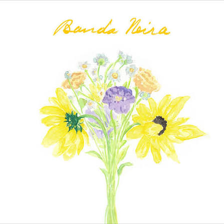
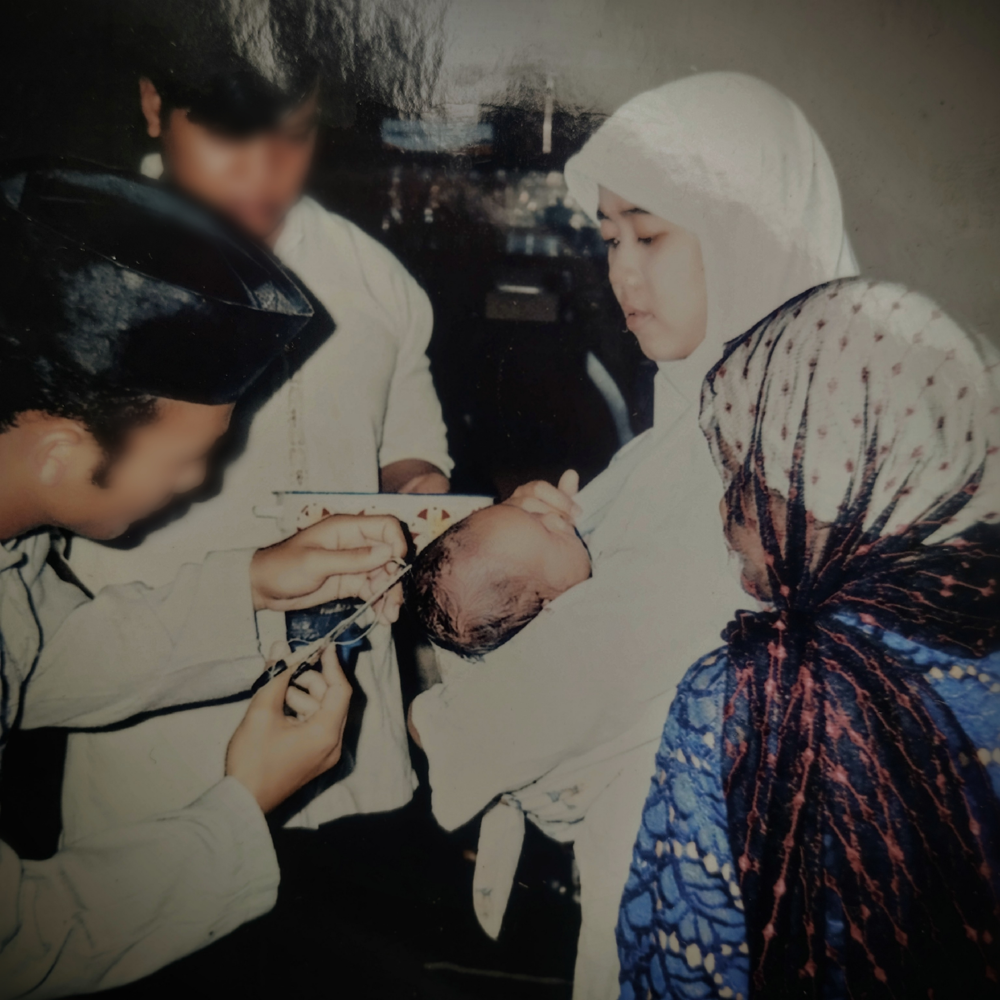
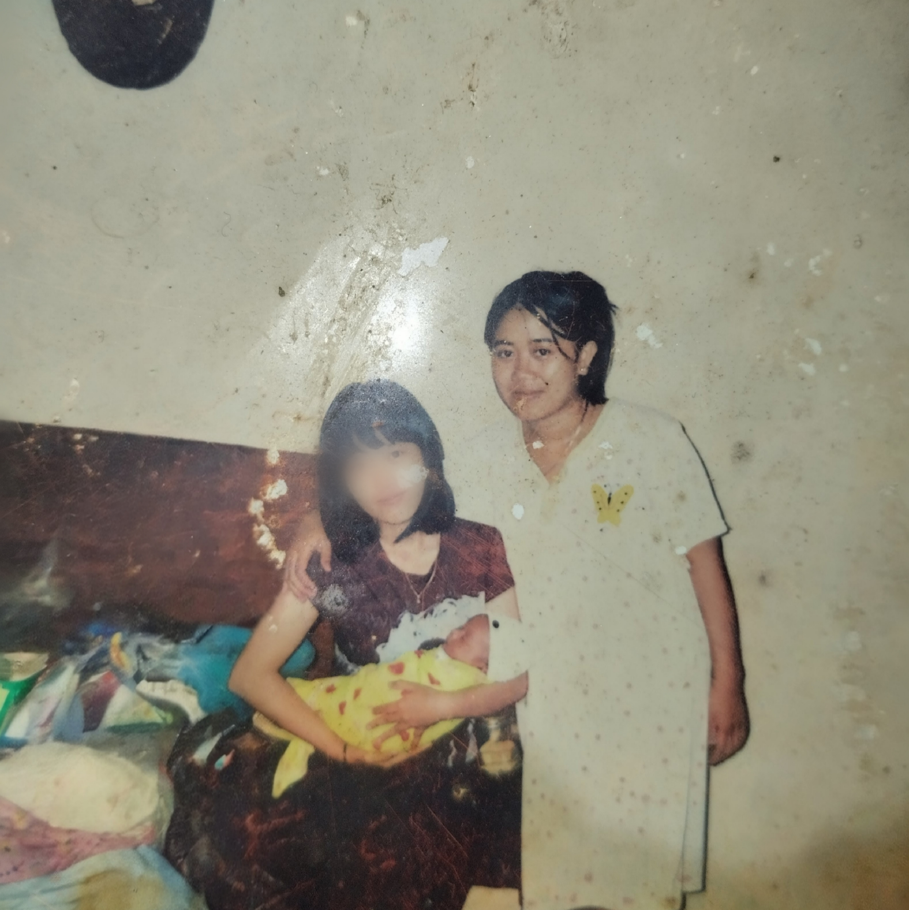
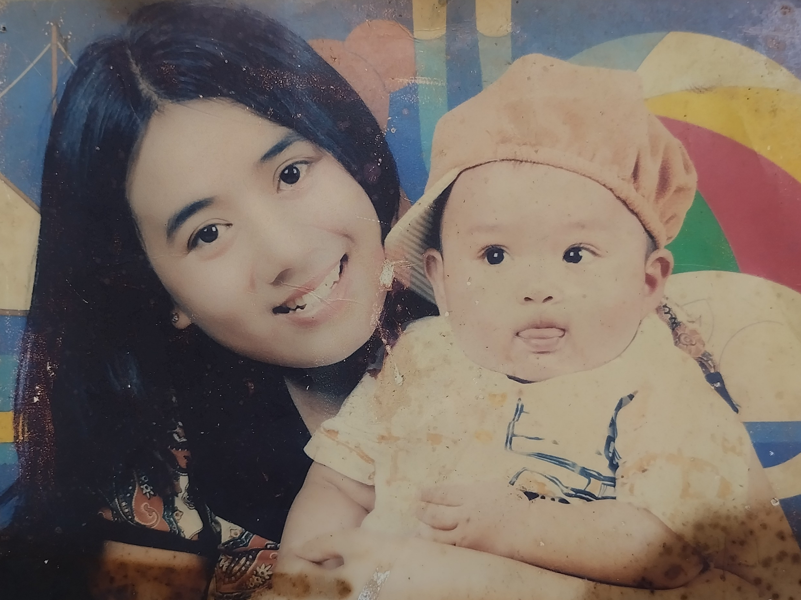

MADE SPECIALLY FOR:3
MAMAH ❤️

A Song for Mama
Boyz II Men
0:00
5:01
SPESIAL COUNTER
15.695
Hari dunia ditemani oleh wanita luar biasa ini.
Kenangan Terbaik Kita

Muasal Dunia
Di hari lahirmu, aku merayakan detik saat tanganmu menyambut napas pertamaku. Selamat ulang tahun, alasan duniaku bermula.

Ruang Sunyi
Maaf untuk setiap tangis ringkihku yang merenggut tenangmu, menjadikanku gangguan termanis yang harus kaudekap tanpa jeda.

Abadi dalam Bingkai
Terima kasih telah membekukan masa kecilku dalam rupa terbaik, merayakan raga sulungmu ini lewat lensa yang menolak lupa.

Jejak Hangat
Meski kertas ini menua dan bernoda dimakan tahun, kehangatan pelataran pagi itu tetap menetap utuh, tak tergores waktu.
Ada pesan suara kecil untukmu, Mah:
Hal yang Perlu Mamah Tahu
Siapa pahlawan favoritku?
❤️ Mamah
Tempat ternyaman di dunia?
❤️ Di dekat Mamah
Apa yang paling berharga dalam hidupku?
❤️ Keluarga yang Mamah jaga selama ini
Apa harapan terbesarku?
❤️ Melihat Mamah tersenyum lebih banyak
Siapa orang paling berjasa di hidupku?
❤️ Orang yang sedang membaca halaman ini